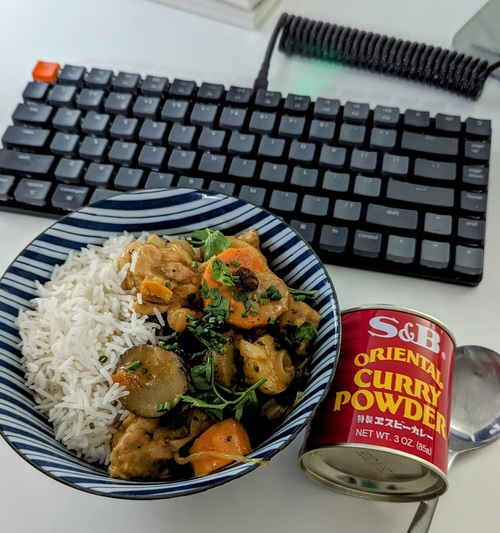

Japanese Curry

Serves: 5
Prep time: 1hr
Author: Matthieu Court
Ingredients
2 cups basmati rice
700g of chicken thighs (diced)
1 large carrot (chopped)
12 baby potatoes (cut in 1/2)
25g apple cider vinegar
20g flour
20g unsalted butter
~3 cups chicken stock (eyeball)
4 tsp oriental curry powder
5 garlic cloves (minced)
2 thumbs ginger (minced)
1 large white onion
1 tbsp honey
1 tbsp raisins
Steps
Brown chicken in sauteuse and collect.
Soften your chooped onion in the chicken fat.
Start your roux with the butter and flour.
(Optional): Combine your curry powder with your garlic and ginger and bind with some white vinegar and cold water.
On medium/high add your garlic and ginger followed by your curry powder.
Re-introduce chicken, add chicken stock.
Add honey, and apple cider vinegar.
Add carrots and potatoes.
Simmer on medium w/ lid half on for 25mins.
Add raisins and soften for a few mins before serving.
Back to Home